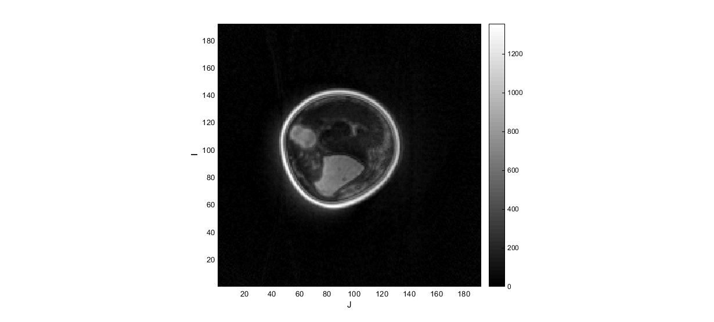

dcmFolder2MATobject
Below is a demonstration of the features of the dcmFolder2MATobject function
Contents
clear; close all; clc; % Plot settings fig_color='w'; fig_colordef='white';
CONVERTING DICOM IMAGE DATA TO A MAT OBJECT
Below some example code is shown to convert all DICOM files inside a folder (including its subfolders) to the IMDAT format. The function dcmFolder2MATobject converts the DICOM data to a matlab MAT object and saves it under the name IMDAT.mat inside a subfolder called IMDAT. A waitbar appears showing the process of the data conversion for the DICOM information and image data. Multiple types of image data (e.g. phase, real, imaginary, magnitude data) is stored seperately. Also several DICOM info fields are harvested and stored.
The IMDAT.mat object contains the following:
IMDAT_struct =
G: [1x1 struct] %The geometry parameters
ImageSize: [128 128 17 20] % The image size
ImageTypesUni: {'ORIGINAL\PRIMARY\M_FFE\M\FFE'} % The image type or types
type_1: [4-D uint16] % The image data matrix
type_1_info: [1x340 struct] % The harvested DICOM informationThe geometry set G contains: G =
v: [3x1 double] %The voxel size
OR: [3x1 double] %The location of the origin
r: [3x1 double] %Direction vector for rows
c: [3x1 double] %Direction vector for ColumnsdataCase=1; %dataCase 1 is for Siemens 1.5T MRI data, dataCase 2 for Philips 3.0T MRI data defaultFolder = fileparts(mfilename('fullpath')); %Set main folder switch dataCase case 1 pathName=fullfile(defaultFolder,'data','DICOM','KNEE_UTE'); case 2 pathName=fullfile(defaultFolder,'data','DICOM','SPAMM_series'); end %Get all subfolders pathNames = regexp(genpath(pathName), '\;', 'split'); pathNames=pathNames(1:end-1)'; numberOfFolders=numel(pathNames); %Converting DICOM data to IMDAT format in all subfolders for q=1:1:numberOfFolders pathNameSub=pathNames{q}; %Current path name if isempty(strfind(pathNameSub,'\IMDAT')); %if the IMDAT directory does not exist yet try dcmFolder2MATobject(pathNameSub,[]);%Get DICOM data catch exception warning([exception.message,'-> Analysis skipped for: ',pathName]); end end end
Detected SIEMENS files DICOM dictionary set to: dicom-dict-siemens.txt
LOADING OR HANDLING THE MAT OBJECT
Here is an example for loading in the entire data structure
loadName=fullfile(pathName,'IMDAT','IMDAT.mat'); IMDAT_struct=load(loadName);
Indexing into the MAT object to avoid loading entire structure
In somecases it is not desirable to load in the entire data set but only say a certain slice. In this case the MAT object allows for indexing as shows below. See also the help documentation for matfile Although this type of indexing can be slow it does allow one to only select a subset of the data which in some cases helps to save memory
matObj = matfile(loadName); G = matObj.G; midSliceNum=round(matObj.ImageSize(1,3)/2); midSlice = matObj.type_1(:,:,midSliceNum,1);
Viewing the image data
%Plotting the slice figuremax(fig_color,fig_colordef); xlabel('J');ylabel('I');hold on; imagesc(midSlice); axis equal; axis tight; colormap gray; colorbar; drawnow;
Viewing the image data using ind2patch
Alternatively the image data can be viewed using the ind2patch function. See the associated help for more information.

GIBBON www.gibboncode.org
Kevin Mattheus Moerman, gibbon.toolbox@gmail.com